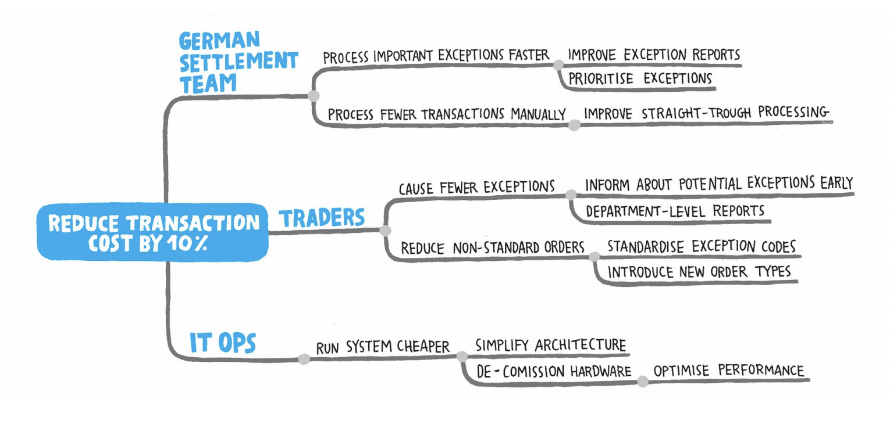

101 Impact Mapping

Juan Antonio Breña Moral
Who I am
|
|
Juan Antonio Breña Moral (45) Technical Product Owner for Shared Platform @ Atradius CIO Twitter | Github | Linkedin |
| Purpose: "Riding dragons with innovation & fun" | |
|
Quote: "Pressure makes diamonds." - George S. Patton Jr. |
|
“Production is the best place on the Internet.”
“Don't tell people how to do things, tell them what to do and let them surprise you with their results.”
― George S. Patton Jr.
“A good plan violently executed now is better than a perfect plan executed at some indefinite time in the future.”
― George S. Patton Jr.
Agenda
- Introduction
- Impact Mapping in detail
- Examples
- How to run a workshop?
- My experience using the technique
- Books
Introduction
What is Impact Mapping?Impact mapping is a lightweight, collaborative planning technique for teams that want to make a big impact with software products. It is based on user interaction design, outcome driven planning and mind mapping.
Introduction
Why use Impact Mapping?Impact mapping is fast, visual and collaborative. It makes it easy to engage people from various roles and backgrounds, expose hidden assumptions and document important decisions. It provides just enough structure to facilitate effective planning and prioritisation, but does not get in the way with complicated syntax or bureaucracy.
Introduction
Why use Impact Mapping?
- Strategic planning
- Defining quality
- Roadmap management
Introduction
Who should use this technique?Impact mapping is for product managers, business sponsors and senior technical leadership working with iterative software delivery, who want to focus effort, restructure existing initiatives or communicate a vision for a new idea.
Impact Mapping in detail

Impact Mapping in detail

Impact Mapping in detail
Goal
- Why are we doing this? Business goal!
- Model for business value
Impact Mapping in detail
Goal / Notes:
- What does the organisation get out of the whole thing?
- SMART: Specific, Measurable, Actionoriented, Realistic and Timely
- Problem to be solved, not the solution. (Avoid design constraints)
- Not an impact on someone's behaviour
Impact Mapping in detail
Actors/Stakeholders
- Who will be impacted by this?
- Who can help to achieve the goal?
- Who can obstruct?
Impact Mapping in detail
Actors/Stakeholders / Notes:
- Primary actors, whose goals are fulfilled players of a gaming system
- Secondary actors, who provide services the fraud prevention team
- Off-stage actors, who have an interest regulators or senior decision-makers
Impact Mapping in detail
Impacts
- How will this impact them?
- How should their behaviour change?
- How can they help?
- How can they obstruct?
Impact Mapping in detail
Impacts / Notes:
- Behaviour changes:
◦ start doing something
◦ stop doing something
◦ do something differently
◦ prevent from doing something
- This is your sphere of influence
◦ Should include key assumptions
- Impacts are not product features
◦ Avoid listing software ideas
◦ Avoid implying solutions
◦ Focus on business activities
Impact Mapping in detail
Deliverables
- What can we do to cause an impact ?
Impact Mapping in detail
Deliverables / Notes:
- User stories, epics, tasks, product ideas
- This is your zone of control
◦ Should not include assumptions
- Options, not commitment
Examples

Examples

Examples 
How to run a workshop?

How to run a workshop?
- Step 1a: Determine the Actors: the “Who”
- Step 1b: Determine the Impacts: the “How”
- Step 1c: Determine Deliverables: the “What”
- Step 2: Find Alternatives
- Step 3: Identify Key Priorities
- Step 4: Earn or Learn (Think Lean Startup!)
- Step 5: Create User Stories>
How to run a workshop?

My experience using the technique
PENDINGBooks

Books

Books

Books

Books